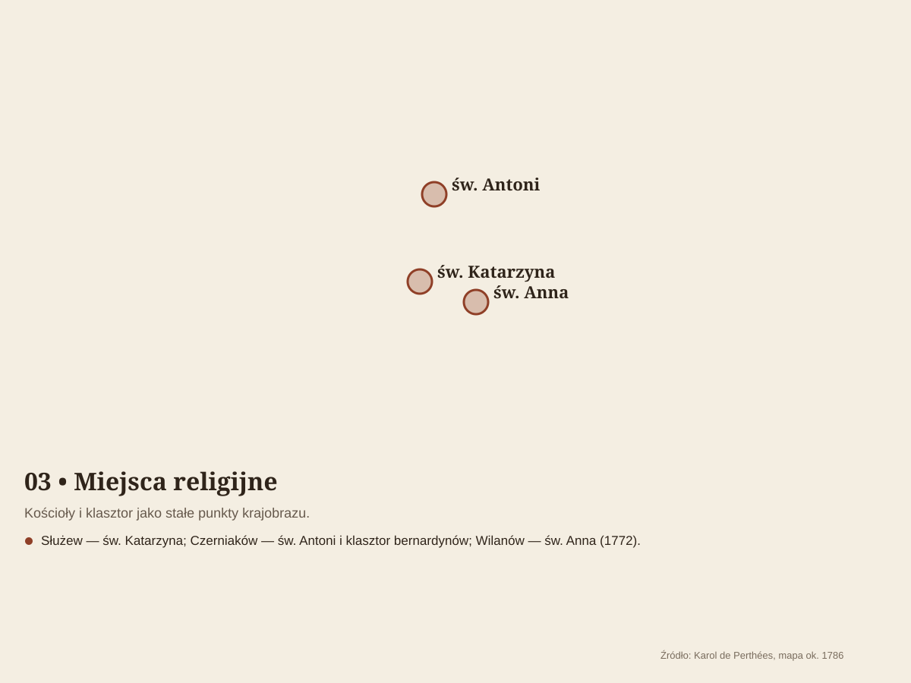
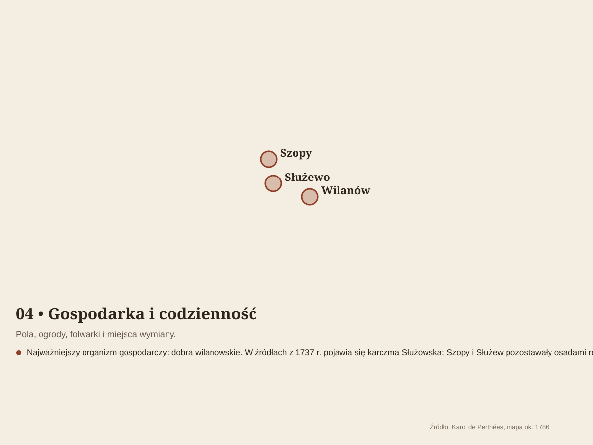
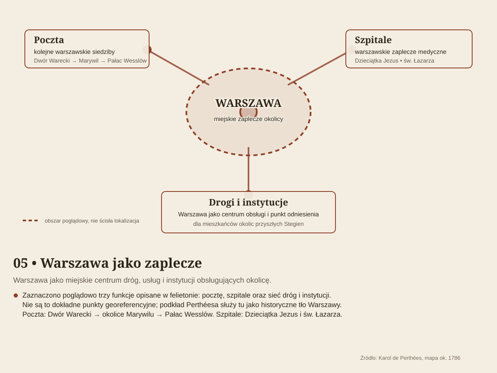
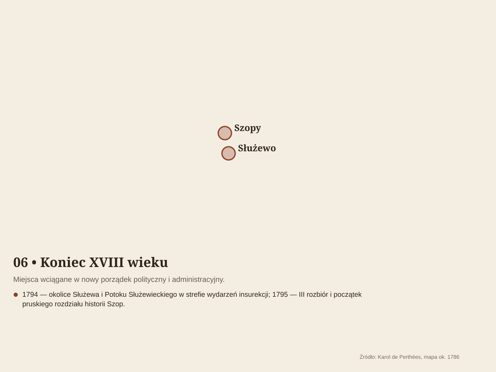

Kronika osiedla
Stegny przed Stegnami
01WSTĘP, POZNAJMY STEGNY
Stegny to nie tylko nazwa osiedla. To także fragment historii Warszawy, krajobrazu Mokotowa i powojennej myśli urbanistycznej.
WSTĘP — POZNAJMY STEGNY
Stegny to jedna z najbardziej rozpoznawalnych części mieszkaniowego Mokotowa. Dzisiejszy obraz osiedla jest wynikiem połączenia dawnego krajobrazu podmiejskiego z wielką powojenną inwestycją mieszkaniową, której budowę rozpoczęto w 1971 roku. Projektanci nie potraktowali terenu wyłącznie jako miejsca pod bloki: układ zabudowy, zieleń, ciągi piesze i przestrzenie rekreacyjne miały tworzyć spójną strukturę codziennego życia. W tym materiale Stegny są pokazane jednocześnie jako nazwa geograficzna, osiedle mieszkaniowe i fragment krajobrazu Warszawy. Tam, gdzie źródła opisują różne zakresy przestrzenne, podajemy to wprost, zamiast udawać, że istnieje jedna bezdyskusyjna granica.

Stegny są częścią Warszawy położoną w dzielnicy Mokotów. W oficjalnym Państwowym Rejestrze Nazw Geograficznych nazwa „Stegny” figuruje jako część miasta. W języku codziennym określenie to odnosi się przede wszystkim do dużego zespołu mieszkaniowego powstałego w latach 70. XX wieku. Warto rozróżnić nazwę obszaru od nazwy samego zespołu mieszkaniowego. Dzisiejsze Stegny są znacznie bardziej złożone niż pierwotny projekt: zmieniały się funkcje usługowe, układ komunikacyjny, otoczenie i sposób użytkowania przestrzeni.
2. Skąd pochodzi nazwa „Stegny”?
Nazwa ma starsze, terenowe pochodzenie i nie została wymyślona dopiero przy projektowaniu osiedla. W polskiej toponimii wyraz „stegna” wiąże się z dawnym określeniem drogi, ścieżki lub traktu. W przypadku warszawskich Stegien najbezpieczniej mówić o tradycyjnej nazwie terenowej, która została zachowana w nazwie współczesnego osiedla. Szczegółowa etymologia warszawskiego toponimu wymaga ostrożności, ponieważ popularne opracowania powtarzają kilka wariantów wyjaśnienia. Dlatego w materiale nie traktujemy jednej z nich jako bezspornego faktu.
3. Położenie geograficzne
Stegny leżą w południowej części Warszawy, na Mokotowie, w strefie pomiędzy Dolnym Mokotowem, Sadybą, Służewem i rejonem Wilanowa. Położenie między głównymi arteriami Jana III Sobieskiego, al. Wilanowską i al. gen. Władysława Sikorskiego sprawia, że osiedle jest dobrze czytelne na mapie miasta. Krajobrazowo jest to obszar silnie przekształcony przez urbanizację, ale zachowujący ślady naturalnego ukształtowania terenu Warszawy: związek ze Skarpą Warszawską, obniżeniami terenowymi oraz systemem wód powierzchniowych południowego Mokotowa.
4. Granice Stegien
Granice Stegien zależą od tego, czy mówimy o nazwie geograficznej, jednostce stosowanej w Miejskim Systemie Informacji, czy potocznym rozumieniu osiedla. W opisach historycznych i lokalnych najczęściej jako główne ramy pojawiają się ul. Jana III Sobieskiego, ul. Idzikowskiego oraz al. Wilanowska; południową i zachodnią stronę wyznaczają w zależności od przyjętego zakresu także al. Sikorskiego, Potok Służewiecki i przebieg Skarpy. Do publikacji blogowej warto więc stosować określenie „obszar Stegien” zamiast przedstawiać umowne linie jako granicę administracyjną. Granice najlepiej odczytywać z aktualnych map miejskich i warstw MSI.
5. Stegny i sąsiednie osiedla
Stegny sąsiadują lub stykają się przestrzennie z obszarami Sadyby, Służewa, Ksawerowa, Sielc i Wilanowa. Szczególne znaczenie ma sąsiedztwo Sadyby — po drugiej stronie ul. Jana III Sobieskiego — oraz kierunek południowy, prowadzący w stronę Wilanowa. Ta lokalizacja sprawia, że Stegny są osiedlem „pomiędzy”: należą do Mokotowa, ale codzienne powiązania mieszkańców wykraczają poza granice dzielnicy.

6. Współrzędne geograficzne
Oficjalny Państwowy Rejestr Nazw Geograficznych podaje dla Stegien współrzędne około 52,185833° N i 21,044444° E. Jest to punkt referencyjny nazwy geograficznej, a nie geometryczny środek wszystkich terenów, które mieszkańcy mogą potocznie nazywać Stegnami. W praktyce współrzędne najlepiej traktować jako punkt orientacyjny do pracy z mapą, GPS lub materiałami geograficznymi.
7. Powierzchnia
W przypadku powierzchni pojawia się rozbieżność między popularnymi opisami a dokumentacją projektową. Opracowanie z 1972 roku dotyczące zespołu Stegny podaje 66,57 ha powierzchni terenu opracowania. W późniejszych, popularnych źródłach pojawia się liczba 75 ha. W niniejszym materiale za podstawową przyjmujemy wartość 66,57 ha, ponieważ pochodzi bezpośrednio z dokumentacji architektonicznej projektu. Różnica wynika najprawdopodobniej z odmiennego sposobu określania zakresu terenu.
8. Rzeźba terenu i Skarpa Warszawska
Stegny leżą w krajobrazie południowego Mokotowa, gdzie ważnym elementem jest Skarpa Warszawska. Jej obecność wpływa na zróżnicowanie wysokościowe i krajobrazowe tej części miasta, choć współczesne osiedle jest w dużej mierze terenem przekształconym. Projektanci Stegien świadomie wykorzystywali rzeźbę terenu także w skali osiedla. W dokumentacji projektowej pojawia się kształtowanie pagórków oraz różnicowanie zieleni. Dzięki temu przestrzeń między blokami nie miała być płaską, jednorodną powierzchnią.
9. Potok Służewiecki i stosunki wodne
Południowe otoczenie Stegien pozostaje związane z systemem Potoku Służewieckiego. Współczesne stosunki wodne są efektem zarówno naturalnych warunków terenowych, jak i wieloletniej urbanizacji: regulacji, kanalizacji, odwodnienia i uszczelniania powierzchni. Źródła projektowe z początku lat 70. zwracały uwagę na płytkie występowanie wód gruntowych, słabe przewietrzanie oraz skłonność terenu do zamgleń i oparów. Pokazuje to, że warunki wodne i mikroklimatyczne były istotnym elementem projektowania Stegien od samego początku.
10. Klimat
Stegny mają klimat miejski Warszawy, kształtowany dodatkowo przez zwartą zabudowę, nawierzchnie utwardzone i dużą liczbę drzew oraz terenów zielonych. W ujęciu wieloletnich norm IMGW dla Warszawy średnia roczna temperatura powietrza wynosi około 10,2°C dla okresu normalnego 1991–2020. Na poziomie osiedla ważne są także mikroklimaty: zacienienie przez budynki, przewietrzanie między pasami zabudowy, wilgotność terenów zielonych i nagrzewanie nawierzchni. Pierwotny projekt Stegien uwzględniał kierunki wiatrów i potrzebę przepływu powietrza pomiędzy budynkami.
11. Świat roślin i zwierząt
Stegny nie są obszarem dzikiej przyrody, ale ich duża ilość zieleni tworzy wartościowe środowisko miejskie. Drzewa, krzewy, trawniki, zadrzewione alejki i tereny rekreacyjne są siedliskiem typowych gatunków miejskich. W praktyce można tu obserwować przede wszystkim ptaki związane z miejską zielenią, owady zapylające oraz drobne ssaki. Skład gatunkowy zmienia się wraz z porą roku i sposobem utrzymania zieleni. Nie należy jednak przypisywać Stegnom wyjątkowych stanowisk przyrodniczych bez potwierdzenia w aktualnych inwentaryzacjach.
12. Zieleń
Zieleń była jednym z ważnych elementów koncepcji Stegien. Projekt z 1972 roku przewidywał większe pasy zieleni parkowej wplecione pomiędzy zabudowę. Miały one służyć rekreacji, tworzyć wnętrza osiedlowe i wspierać przewietrzanie. Charakterystyczne są także pagórki i zróżnicowane nasadzenia. Zieleń nie została więc potraktowana wyłącznie jako dekoracja, lecz jako część kompozycji urbanistycznej. To jeden z powodów, dla których Stegny do dziś odbierane są jako osiedle stosunkowo zielone jak na dużą inwestycję mieszkaniową z epoki prefabrykacji.
13. Ludność i demografia
Liczba mieszkańców Stegien zależy od przyjętej granicy obszaru i źródła danych. W dokumentacji projektowej z lat 70. pojawiają się wartości planistyczne związane z liczbą mieszkań i projektowaną populacją, ale nie można ich utożsamiać z obecną liczbą mieszkańców. Dla przykładu miejski raport oparty na danych mobilnych oszacował dzienną populację obszaru MSI Stegny w maju 2018 roku na około 22–26 tys. osób zależnie od dnia tygodnia. Są to dane o mobilności i obecności ludności, a nie współczesny spis mieszkańców. Dlatego nie należy przedstawiać ich jako aktualnej liczby ludności w 2026 roku.
14. Zabudowa i charakter przestrzenny
Stegny są jednym z charakterystycznych przykładów warszawskiej architektury mieszkaniowej lat 70. Projekt zespołu przygotowali Jadwiga Grębecka, Jan Szpakowicz i Romuald Welder. Budowę rozpoczęto w 1971 roku. W projekcie zastosowano zarówno niższe budynki pasmowe, jak i wysokie punktowce. Dokumentacja „Architektury” z 1972 roku wymienia wysokości 5, 11, 13 i 16 kondygnacji. Ważną zasadą było oddzielenie ruchu pieszego od samochodowego i pozostawienie dużej części zieleni pomiędzy budynkami. Budynki mieszkalne wykonywano w systemie „Szczecin”, z elementów prefabrykowanych produkowanych w Fabryce Domów na Służewcu. Stegny były więc także ważnym eksperymentem technologicznym warszawskiego budownictwa mieszkaniowego.
15. Infrastruktura — szkoły, przedszkola, sklepy i usługi
Budowa Stegien nie oznaczała jedynie wzniesienia tysięcy mieszkań. Od początku zakładano, że powstanie tutaj samowystarczalne osiedle, w którym mieszkańcy będą mogli nie tylko mieszkać, ale również korzystać z podstawowych usług, edukacji, handlu, rekreacji i komunikacji. Było to zgodne z zasadami projektowania dużych zespołów mieszkaniowych charakterystycznymi dla Warszawy lat 60. i 70. XX wieku.
15.1. Szkoły — edukacja blisko miejsca zamieszkania
Jednym z najważniejszych elementów infrastruktury Stegien stały się szkoły. Ich lokalizacja miała odpowiadać podstawowej zasadzie projektowania osiedla: dziecko powinno móc dotrzeć do szkoły pieszo, bez konieczności przekraczania głównych arterii komunikacyjnych.
Pierwotny projekt przewidywał budowę dwóch szkół podstawowych. Ostatecznie w pierwszym etapie zrealizowano jedną z nich, co pokazuje, że infrastruktura Stegien nie zawsze powstawała w pełnym zakresie równocześnie z zabudową mieszkaniową.
W kolejnych dekadach sieć placówek edukacyjnych została uzupełniona. Obecnie w rejonie Stegien funkcjonują szkoły podstawowe obsługujące zarówno mieszkańców samego osiedla, jak i sąsiednich części Mokotowa. Do placówek związanych z tym obszarem należą między innymi szkoły przy ulicach Barcelońskiej, Czarnomorskiej i św. Bonifacego.
Szkoła stała się przy tym czymś więcej niż tylko budynkiem przeznaczonym do nauki. Na osiedlu pełniła również funkcję lokalnego centrum życia społecznego. Sale gimnastyczne, boiska, place i tereny wokół szkół przez dziesięciolecia służyły także mieszkańcom poza godzinami lekcyjnymi.
15.2. Przedszkola i opieka nad najmłodszymi
Drugim ważnym elementem planowanej infrastruktury były przedszkola. Było to szczególnie istotne na osiedlu projektowanym dla wielu tysięcy mieszkańców, wśród których miała znajdować się duża liczba młodych rodzin.
Pierwotnie przewidywano cztery przedszkola, jednak w ramach realizacji osiedla wybudowano dwa. Oznacza to, że również w tym przypadku rzeczywista infrastruktura była skromniejsza od pierwotnych założeń projektowych.
W następnych latach powstawały kolejne placówki. Przedszkola lokalizowano przede wszystkim wśród zabudowy mieszkaniowej, tak aby rodzice mogli dotrzeć do nich pieszo z najbliższych budynków.
Do dziś edukacja przedszkolna jest jednym z ważnych elementów lokalnej infrastruktury Stegien. Obok placówek publicznych działają również placówki niepubliczne, odpowiadające na zmieniające się potrzeby mieszkańców.
15.3. Sklepy i handel — od pawilonów do współczesnego handlu
Handel był od początku jednym z podstawowych elementów funkcjonowania osiedla. Projektanci zakładali powstanie pawilonów handlowych rozmieszczonych tak, aby mieszkańcy mogli wykonywać codzienne zakupy bez konieczności opuszczania osiedla.
Plan przewidywał trzy pawilony handlowe, z których ostatecznie zrealizowano dwa. Nie powstało natomiast planowane wielkie centrum handlowe, które pierwotnie miało znaleźć się w centralnej części osiedla.
Pawilony handlowe przez wiele lat stanowiły charakterystyczny element krajobrazu Stegien. Znajdowały się w nich sklepy spożywcze, punkty usługowe, kioski, lokale gastronomiczne i inne niewielkie przedsiębiorstwa. Dla mieszkańców były naturalnymi miejscami codziennych zakupów i spotkań.
Z czasem model handlu zaczął się zmieniać. Część dawnych pawilonów przekształcono, inne zastąpiono nowymi lokalami, a wraz z rozwojem Warszawy pojawiły się większe sklepy i centra handlowe w bezpośrednim sąsiedztwie osiedla.
Jednocześnie na samych Stegnach zachował się charakter lokalnego handlu. Działają tu niewielkie sklepy spożywcze, piekarnie, apteki, drogerie, sklepy specjalistyczne oraz różnego rodzaju punkty usługowe.
15.4. Usługi — codzienne życie mieszkańców
Osiedle mieszkaniowe nie może funkcjonować bez usług. Dlatego wraz z mieszkaniami rozwijały się punkty pocztowe, apteki, przychodnie, punkty naprawcze, fryzjerskie, gastronomiczne i inne placówki potrzebne w codziennym życiu.
Szczególnie ważną rolę odgrywały lokale użytkowe znajdujące się w parterach i pawilonach. Ich obecność sprawiała, że mieszkańcy nie musieli załatwiać wszystkich spraw w centrum Warszawy.
Po 1989 roku nastąpiła zasadnicza zmiana charakteru usług. W miejsce części państwowych lub spółdzielczych punktów pojawiły się prywatne firmy. Rozwinęła się gastronomia, usługi kosmetyczne, firmy remontowe, biura, punkty kurierskie i różnego rodzaju działalność gospodarcza.
Dobrym przykładem skali tej zmiany jest Osiedle Stegny Południe. Według informacji administracji osiedla znajduje się tam obecnie kilkadziesiąt lokali użytkowych, punkty handlowo-usługowe, parkingi komercyjne, placówki oświatowe, biblioteka, ośrodek kultury, punkty gastronomiczne, bankomaty, paczkomaty i agencja pocztowa.
15.5. Biblioteka, kultura i życie lokalne
Infrastruktura Stegien nie ogranicza się do funkcji mieszkaniowych, handlowych i edukacyjnych. Z czasem powstały również miejsca związane z kulturą i aktywnością społeczną.
Biblioteka, placówki kulturalne i różnego rodzaju lokalne inicjatywy stworzyły mieszkańcom możliwość spędzania czasu na miejscu. Szczególne znaczenie ma tu działalność Ośrodka Kultury „Aktywne Stegny”, a także biblioteki publicznej.
Dzięki temu Stegny z czasem przestały być wyłącznie zespołem bloków. Wykształciła się tutaj lokalna społeczność, dla której szkoła, sklep, biblioteka, plac zabaw, boisko czy pawilon usługowy były elementami codziennego życia.
15.6. Sport i rekreacja
Dużą rolę w strukturze Stegien odgrywa również infrastruktura sportowa. Projekt osiedla zakładał stosunkowo dużo przestrzeni między budynkami, a rozdzielenie ruchu samochodowego od pieszego pozwoliło zachować tereny przeznaczone na zieleń, spacery, place zabaw i aktywność fizyczną.
Istotnym elementem sportowego charakteru tej części Mokotowa jest Tor Łyżwiarski Stegny, który przez dziesięciolecia był jednym z najbardziej rozpoznawalnych obiektów sportowych południowej Warszawy.
Do infrastruktury rekreacyjnej należą również boiska, place zabaw, tereny zielone oraz obiekty sportowe związane ze szkołami. Dzięki temu sport i rekreacja są dostępne stosunkowo blisko miejsc zamieszkania.
15.7. Komunikacja
Ważną częścią infrastruktury Stegien jest komunikacja. Osiedle zostało zaprojektowane w sposób charakterystyczny dla ówczesnej urbanistyki: główne ulice prowadzą ruch samochodowy wokół zespołów zabudowy, natomiast wewnątrz osiedla pozostawiono liczne ciągi piesze.
Takie rozwiązanie miało zwiększać bezpieczeństwo mieszkańców, szczególnie dzieci. Wewnętrzne alejki i przejścia pozwalały przemieszczać się między blokami, szkołami, sklepami i terenami rekreacyjnymi bez konieczności korzystania z głównych ulic.
Podstawowe połączenia komunikacyjne zapewniają przede wszystkim ulice Jana III Sobieskiego, św. Bonifacego, al. gen. Władysława Sikorskiego i al. Wilanowska. Wzdłuż nich skoncentrowana jest również znaczna część przystanków komunikacji miejskiej i usług.
15.8. Infrastruktura techniczna
Rozwój Stegien oznaczał także stworzenie całego systemu infrastruktury technicznej: dróg, chodników, instalacji wodociągowych i kanalizacyjnych, sieci energetycznych, centralnego ogrzewania, oświetlenia oraz parkingów.
W pierwszych latach funkcjonowania osiedla nie wszystkie elementy infrastruktury były jednak od razu gotowe. Materiały dotyczące rozwoju Stegien wskazują, że początkowo mieszkańcy zmagali się między innymi z niedostatkiem utwardzonych uliczek i chodników oraz brakiem części podstawowych obiektów usługowych.
Z biegiem lat infrastruktura była uzupełniana i modernizowana. Zmieniały się również potrzeby mieszkańców. Dawne parkingi i ciągi komunikacyjne musiały zostać dostosowane do znacznie większej liczby samochodów, a tradycyjne usługi zaczęły być uzupełniane przez paczkomaty, nowoczesne punkty handlowe i usługi internetowe.
15.9. Stegny jako osiedle „wszystkiego pod ręką”
Jedną z najbardziej charakterystycznych cech Stegien jest stosunkowo duża koncentracja różnych funkcji na niewielkim obszarze. Mieszkaniec może znaleźć w pobliżu domu szkołę, przedszkole, sklep, aptekę, punkt usługowy, plac zabaw, boisko, przystanek autobusowy czy teren zielony.
Była to zresztą jedna z podstawowych idei, które towarzyszyły projektowaniu osiedla w latach 70. XX wieku. Stegny miały być nie tylko miejscem zamieszkania, lecz kompletnym zespołem miejskim.
Nie wszystkie pierwotne zamierzenia udało się zrealizować. Z dwóch planowanych szkół powstała początkowo jedna, z czterech projektowanych przedszkoli dwa, a z trzech planowanych pawilonów handlowych dwa.
Mimo tych różnic między projektem a rzeczywistością infrastruktura Stegien stopniowo się rozwijała. Kolejne dekady przyniosły nowe placówki, sklepy, usługi, obiekty sportowe i miejsca związane z kulturą.
15.10. Od osiedla lat 70. do Stegien w XXI wieku
Infrastruktura Stegien dobrze pokazuje przemiany, jakie nastąpiły w Warszawie od początku lat 70. XX wieku.
Lata 70. — budowa mieszkań, szkół, przedszkoli i pierwszych pawilonów handlowych. Osiedle otrzymuje podstawowe zaplecze potrzebne do życia.
Lata 80. — rozwój lokalnych usług i infrastruktury, ale również problemy charakterystyczne dla gospodarki niedoboru: ograniczona dostępność towarów, niewystarczająca liczba miejsc parkingowych i stopniowe zużywanie się infrastruktury.
Po 1989 roku — szybki rozwój prywatnego handlu i usług. Pojawiają się nowe sklepy, lokale gastronomiczne, firmy usługowe i prywatne placówki edukacyjne.
XXI wiek — dalsze różnicowanie infrastruktury. Tradycyjne sklepy i pawilony funkcjonują obok dyskontów, większych obiektów handlowych, paczkomatów, nowoczesnych usług i prywatnych placówek.
Współczesne Stegny są więc przykładem osiedla, którego infrastruktura zmieniała się razem z mieszkańcami i całym miastem. Zachowano wiele pierwotnych funkcji zaprojektowanych w latach 70., ale jednocześnie uzupełniono je o rozwiązania charakterystyczne dla współczesnej Warszawy.
To właśnie połączenie szkół, przedszkoli, handlu, usług, sportu, zieleni i komunikacji sprawia, że Stegny można postrzegać nie tylko jako zespół mieszkaniowy, lecz jako samodzielny fragment miasta, posiadający własną strukturę i własne codzienne życie.
16. Najważniejsze ulice i punkty orientacyjne
Do głównych ulic otaczających lub porządkujących przestrzeń Stegien należą ul. Jana III Sobieskiego, al. gen. Władysława Sikorskiego i al. Wilanowska. Wewnątrz osiedla szczególne znaczenie ma ul. św. Bonifacego, która pełni rolę ważnej osi kompozycyjnej. Ważnym punktem orientacyjnym jest także rejon skrzyżowania Sobieskiego i Bonifacego, przewidziany w pierwotnej koncepcji jako centrum handlowo-usługowe. Układ przestrzenny Stegien najlepiej czytać właśnie przez relację pomiędzy głównymi arteriami a bardziej kameralnymi wnętrzami między blokami.
17. Stegny pokazują ważny etap rozwoju Warszawy
Stegny pokazują ważny etap rozwoju Warszawy: przejście od miasta z rozproszonymi terenami podmiejskimi do wielkich, planowanych zespołów mieszkaniowych. Jednocześnie projektanci starali się zachować ludzką skalę poprzez zieleń, piesze alejki, wnętrza osiedlowe i zróżnicowanie wysokości budynków. Dziś Stegny są przykładem osiedla, które przetrwało zmianę epoki. Prefabrykowana konstrukcja i modernistyczny układ pozostały, ale zmieniły się samochody, usługi, sposób korzystania z przestrzeni, potrzeby mieszkańców i otoczenie miasta. Dzięki temu Stegny są dobrym materiałem do obserwowania, jak Warszawa adaptuje powojenną tkankę mieszkaniową.
18. Krótka oś czasu — od najdawniejszych śladów do 2026 roku
• Dawniej — obszar dzisiejszych Stegien był częścią rolniczego i podmiejskiego krajobrazu południowego Mokotowa; funkcjonowała tu tradycyjna nazwa terenowa „Stegny”.
• XX wiek — wraz z rozwojem Warszawy teren stopniowo wchodzi w orbitę intensywnej urbanizacji.
• 1970 — projekt zespołu Stegny był już przygotowany; późniejsze źródła lokalne podają przyznanie mu nagrody Ministra Budownictwa.
• 1971 — rozpoczęto budowę zespołu mieszkaniowego, początkowo na Stegnach Północnych.
• 1972 — projekt i jego założenia urbanistyczne oraz przyrodnicze zostały szczegółowo opublikowane w miesięczniku „Architektura”.
• 1971–1975 — główny etap realizacji zespołu mieszkaniowego.
• Lata 70. i późniejsze — Stegny stają się dużym, zamieszkanym zespołem mieszkaniowym z rozbudowywanymi usługami, szkołami, zielenią i infrastrukturą.
• XXI wiek — osiedle pozostaje integralną częścią Mokotowa i jest stopniowo modernizowane, podczas gdy jego pierwotny układ urbanistyczny pozostaje czytelny.
• 2026 — Stegny są jednym z ważnych zespołów mieszkaniowych południowego Mokotowa; ich wartość polega nie tylko na skali, lecz także na zachowanym związku zabudowy z zielenią i pierwotną koncepcją urbanistyczną.
02Stegny przed Stegnami – Pradzieje i średniowiecze
Zanim pojawiły się ulice, bloki, szkoły i osiedlowe sklepy, był tutaj przede wszystkim krajobraz. Rozległa, lekko pofałdowana równina, skarpa wiślana, doliny cieków wodnych i podmokłe obniżenia terenu. Jednym z ważnych elementów tego krajobrazu była dolina Potoku Służewieckiego — pozostałość znacznie starszej doliny rzecznej. Dzisiaj znamy ją przede wszystkim jako Dolinkę Służewską, z alejkami, trawnikami i pasem zieleni. Dawniej była jednak przede wszystkim naturalnym elementem terenu, który wyznaczał drogę wodzie i wpływał na to, gdzie można było przejść, gdzie można było zamieszkać, a gdzie lepiej było nie zakładać osady.
Najpierw był krajobraz
Taki krajobraz nie był pusty. Człowiek pojawiał się tutaj od bardzo dawna, choć oczywiście nie możemy jeszcze mówić o miejscowościach czy wsiach w takim znaczeniu, jakie znamy dzisiaj. Przez tysiące lat zmieniały się sposoby życia, narzędzia i zajęcia ludzi, zmieniała się także sama przyroda. Las ustępował miejscami otwartym przestrzeniom, powstawały pola i pastwiska, zmieniały się cieki wodne. To właśnie dlatego, patrząc dzisiaj na południowy Mokotów, warto pamiętać, że oglądamy krajobraz wielokrotnie przekształcany przez człowieka.
Pierwsi ludzie
Najstarsze ślady obecności człowieka w okolicach dzisiejszej Warszawy nie przypominają zabytków, które łatwo sobie wyobrazić. Nie są to ruiny domów ani zachowane ulice. Częściej są to pojedyncze przedmioty znalezione w ziemi — fragmenty naczyń, narzędzia, krzemienne odłupki czy ślady dawnych palenisk. Dopiero ich nagromadzenie i wzajemne położenie pozwalają archeologom odtworzyć obraz życia ludzi sprzed setek czy tysięcy lat.
W południowej części dzisiejszej Warszawy takich śladów odkryto wiele. Szczególnie interesujące są okolice Służewa, Wilanowa i Sadyby. Nie wszystkie znaleziska można przypisać bezpośrednio do miejsca, które dzisiaj nazywamy Stegnami, bo współczesne granice osiedli nie mają nic wspólnego z dawnym podziałem terenu. Dla mieszkańca dzisiejszego Mokotowa ważniejszy jest jednak szerszy obraz: okolica nie była pustkowiem, które dopiero w XX wieku zostało zasiedlone. Ludzie korzystali z tych terenów na długo przed powstaniem znanych nam dzisiaj miejscowości.
Z czasem sposób życia zaczął się zmieniać. Ludzie coraz częściej nie tylko przemieszczali się po krajobrazie, ale pozostawali w jednym miejscu na dłużej. Pojawiło się rolnictwo, hodowla zwierząt i bardziej trwałe osady. Zaczęto uprawiać ziemię, gromadzić zapasy i budować domostwa, które można było odbudować lub postawić ponownie w tym samym miejscu. Krajobraz, który wcześniej był przede wszystkim przestrzenią do przemieszczania się i zdobywania pożywienia, zaczął stawać się krajobrazem zamieszkania.
Osady i cmentarzyska
Po dawnych mieszkańcach tych terenów pozostały nie tylko przedmioty codziennego użytku. Archeologia znajduje również miejsca pochówku. To właśnie cmentarzyska są szczególnie ważnym śladem dawnych społeczności, bo pokazują, że ludzie nie tylko tutaj przebywali, ale tworzyli grupy, które miały swoje obyczaje, wierzenia i określony sposób traktowania zmarłych.
W rejonie dzisiejszej Sadyby odkrywano między innymi cmentarzyska związane z kulturą grobów kloszowych oraz ślady związane z kulturą łużycką. Dla współczesnego mieszkańca nazwy te mogą brzmieć dość abstrakcyjnie. W rzeczywistości kryją się za nimi ludzie, którzy żyli tutaj wiele pokoleń przed powstaniem Warszawy. Mieli swoje domy, swoje pola, swoje miejsca pochówku i swoje drogi. Ziemia, po której dzisiaj jedziemy samochodem albo spacerujemy z psem, była dla nich częścią codziennego świata.
Nie należy przy tym wyobrażać sobie jednej wielkiej, nieprzerwanej osady zajmującej cały dzisiejszy Mokotów. Dawne osadnictwo wyglądało inaczej. Poszczególne grupy pojawiały się w różnych miejscach, przenosiły się, zakładały nowe osady i opuszczały starsze. Jedne miejsca zamieszkiwano przez dłuższy czas, inne wykorzystywano tylko okresowo. Archeologia pozwala z tych rozproszonych śladów złożyć coraz pełniejszy obraz — nie pojedynczej miejscowości, lecz całego krajobrazu zamieszkanego przez ludzi.
Wraz z upływem wieków pojawiały się też pierwsze elementy organizacji przestrzeni, które w pewnym sensie znamy do dziś. Były miejsca dogodniejsze pod uprawę, były mokradła i doliny cieków wodnych, były naturalne wyniesienia terenu. Były ścieżki i drogi prowadzące do sąsiednich osad. Człowiek coraz wyraźniej wpisywał się w krajobraz, a krajobraz coraz wyraźniej wpływał na jego życie.
Służew
Kiedy przechodzimy od pradziejów do średniowiecza, pojawia się coś, czego wcześniej brakuje — dokumenty. Dzięki nim nie musimy już opierać się wyłącznie na tym, co pozostawiła ziemia. Możemy zacząć poznawać konkretne nazwy, właścicieli, parafie, granice i miejscowości.
Jedną z najważniejszych dla historii całego tego obszaru jest oczywiście nazwa Służew. Najstarsza pewna wzmianka wskazywana przez Słownik historyczno-geograficzny ziemi warszawskiej w średniowieczu pochodzi z 1238 roku. Wtedy Służew był już na tyle ukształtowaną osadą, że istniał tutaj kościół i funkcjonowała parafia. Kilka lat później, w 1245 roku, książę nadał Służew komesowi Gotardowi, wraz z określonymi prawami i przywilejami.
To bardzo odległy świat, ale warto zatrzymać się przy tych datach. Warszawa, jaką znamy, jeszcze nie istniała. Nie było oczywiście Mokotowa w dzisiejszym znaczeniu, nie było ulic Puławskiej, Sobieskiego ani Czerniakowskiej. Były natomiast wsie, pola, lasy, drogi i miejsca związane z przeprawami przez rzeki i cieki wodne. Byli ludzie, którzy posiadali ziemię, pracowali na niej i musieli określać, gdzie kończy się ich własność, a zaczyna ziemia sąsiada.
Służew nie był przy tym samotną wyspą. W jego sąsiedztwie znajdowały się inne osady i dobra, a ich wzajemne położenie z czasem zaczęto coraz dokładniej określać. W dokumentach pojawiają się nazwy sąsiednich miejscowości, granice pól i rozmaite punkty orientacyjne. Właśnie w takich zapisach zaczyna się pojawiać świat, który możemy już próbować nanosić na współczesną mapę.
Średniowieczny krajobraz
Wyobrażenie średniowiecznego Mokotowa nie powinno jednak przypominać miasta. Znacznie bliżej mu było do krajobrazu rolniczego. Pomiędzy poszczególnymi osadami rozciągały się pola, łąki, zarośla i lasy. Drogi nie tworzyły jeszcze regularnej sieci, jaką znamy dzisiaj. Część z nich wynikała po prostu z ukształtowania terenu i prowadziła tam, gdzie przejście było najłatwiejsze.
Szczególne znaczenie miała woda. Dolina Potoku Służewieckiego była naturalnym elementem tego krajobrazu, podobnie jak Wisła i jej wysoka skarpa. Takie miejsca nie były jedynie ozdobą terenu. Decydowały o możliwościach uprawy, hodowli, komunikacji i osadnictwa. Człowiek mógł zmieniać otoczenie, ale przez długi czas musiał się do niego dostosowywać.
Z czasem przestrzeń stawała się coraz bardziej uporządkowana. Pojawiały się wyraźniejsze granice dóbr i pól, utrwalały się nazwy miejscowości, powstawały parafie. Służew był już ważnym punktem lokalnego świata, a wokół niego funkcjonowały kolejne osady i gospodarstwa. W XV wieku źródła pozwalają nawet śledzić ustalenia dotyczące granic Służewa z sąsiednimi dobrami. To drobne informacje, ale właśnie z takich drobiazgów składa się historia miejsca.
Dzisiaj patrzymy na południowy Mokotów jak na fragment wielkiego miasta. Trudno wyobrazić sobie, że przed wiekami była to przestrzeń znacznie bardziej otwarta, zielona i rolnicza, poprzecinana drogami prowadzącymi między niewielkimi osadami. A jednak kolejne warstwy tej historii nadal są obecne pod współczesnym miastem — czasem w postaci nazwy, czasem w przebiegu dawnej drogi, czasem w odkrytym przez archeologów przedmiocie czy miejscu pochówku.
I właśnie z tego średniowiecznego krajobrazu warto przejść dalej. Kiedy pojawiają się dokładniejsze informacje o granicach dóbr, właścicielach ziemi, sąsiednich wsiach i drogach, historia przestaje być już tylko opowieścią o odległej przeszłości. Zaczyna przypominać mapę. A na tej mapie coraz łatwiej dostrzec obszar, który wiele stuleci później stanie się częścią naszego dzisiejszego Mokotowa.
Bibliografia
- Słownik historyczno-geograficzny ziemi warszawskiej w średniowieczu, Instytut Historii PAN — hasło „Służew”. Źródło
- Państwowe Muzeum Archeologiczne w Warszawie, Baza stanowisk z Warszawy. Źródło
- Zarząd Zieleni m.st. Warszawy, Park Dolinka Służewska. Źródło
- Dziennik Urzędowy Województwa Mazowieckiego, wykaz zabytków archeologicznych. Źródło
03Stegny przed Stegnami - wiek XVI i XVII
Służew i jego sąsiedzi
Służew był najważniejszym punktem tego świata. To stara wieś i parafia, poświadczona już w XIII wieku. Początkowo należała do opactwa czerwińskiego, później do książąt mazowieckich, a od XIII wieku zaczęła przechodzić w ręce szlachty. W XV i XVI wieku Służew był już mozaiką dóbr kilku rodzin. W dokumentach pojawiają się Ziemakowie, Gotardowie, Wierzbiętowie i Służewscy. Granice ich majątków nie były abstrakcyjnymi kreskami na mapie — prowadziły przez pola, gaje, łąki i pastwiska.
Służewiec i Jemielino tworzyły z kolei własny mały układ majątkowy. W pierwszej połowie XV wieku pojawiają się tu Latchorzewscy i Dołęgowie, a przy rodzinnym podziale dóbr w 1470 roku Marcin otrzymał Służewiec i Jemielino. To dobry przykład świata, w którym wieś mogła być częścią większego majątku, a ten z kolei dzielono między kolejnych spadkobierców.
Wolica Służewska pokazuje tę rzeczywistość chyba najbarwniej. W 1429 roku Jan Łuczyc ze Służewa i Mikołaj Bryszek podzielili między siebie dziedzictwo, wymieniając się gajami i płosami, ale pozostawiając pastwiska wspólne. Kilka słów w dokumencie wystarcza, żeby zobaczyć wieś jako mozaikę prywatnych pól i wspólnie użytkowanej przestrzeni.
Wyczółki pojawiają się w źródłach pod koniec XV wieku. W 1501 roku zapisano nawet nazwę „Wyczolkowo alias Wolya Sluzewska”. W 1483 roku książę Bolesław V nadał Krystynowi z Łomianek przywilej prawa niemieckiego dla Łomianek, Wyczółek i Gołąbek. I znów za nazwą miejscowości widzimy nie tylko ziemię, ale człowieka i jego prawa do niej.
Czerniaków był kolejnym ważnym sąsiadem Służewa. Źródła poświadczają go już w 1381 roku, a w XV wieku pokazują jego bardzo konkretny krajobraz: pola, łąki, Wisłę, drogę do Solca, a także młyn, sadzawkę i mostek. To miejsce pozwala nam spojrzeć na okolicę nie tylko przez pryzmat własności, ale także codziennego użytkowania ziemi i wody.
Milanowo, czyli późniejszy Wilanów, było już w 1403 roku wsią parafialną. W 1468 roku źródła wymieniają je jako sąsiada Służewa i Czerniakowa. Dla naszej opowieści jest ważne przede wszystkim dlatego, że pokazuje, jak stara jest sieć miejscowości, które dzisiaj znamy pod zupełnie innymi nazwami. „Wilanów” ma tutaj jeszcze twarz średniowiecznego Milanowa.
Mokotów był północnym sąsiadem Służewa i miał nieco inną historię własnościową — wcześniej należał do dóbr książęcych. W XVI wieku źródła wyraźnie odnotowują granicę Mokotowa ze Służewem należącym do panów Służewskich. To pokazuje, że w najbliższej okolicy mogły stykać się ze sobą majątki o różnej historii i różnym pochodzeniu.
Na północny zachód od Służewa znajdowały się również Szopy. Nie znamy dokładnego momentu ich założenia, ale pierwsza znana wzmianka o tej wsi pochodzi z 1456 roku, kiedy występuje ona pod nazwą Sopi. Była to wieś szlachecka związana z rodem Wierzbowów. W 1580 roku liczyła zaledwie 2 łany, czyli około 34 hektary. W pierwszej połowie XVII wieku Szopy przeszły w ręce karmelitów bosych. W XVII wieku nie pojawia się więc tutaj nowa osada — istniejąca od średniowiecza wieś zmienia przede wszystkim właściciela. Dopiero pod koniec XVIII wieku, po przejęciu tych terenów przez państwo pruskie, zaczęły się dzieje Szop Niemieckich i Szop Polskich. Nazw tych nie należy więc przenosić na krajobraz XVII wieku.
Gospodarstwa i pola
Służew był przede wszystkim krajobrazem rolniczym. Źródła pozwalają zobaczyć nie tylko właścicieli, ale także ziemię, którą dzielili między siebie: pola, płosy, łąki i gaje. Były tu również gospodarstwa kmiece, czyli należące do chłopów gospodarujących na ziemi swoich panów. W 1499 roku wspomniana jest służewska sadzawka. Nie znamy natomiast średniowiecznego młyna — pierwsza znana wzmianka o nim pochodzi dopiero z XVIII wieku.
Służewiec i Jemielino tworzyły odrębny układ majątkowy, ale jego podstawą również była ziemia uprawna. Przy podziałach rodzinnych dzielono nie tylko całe wsie, lecz także konkretne części majątku. To oznaczało pola, łąki i inne użytki, które przechodziły z jednego spadkobiercy na drugiego. Właśnie dlatego średniowieczna mapa była raczej mozaiką różnych praw do ziemi niż zbiorem prostych, równych granic.
Wolica Służewska daje nam chyba najlepszy obraz takiego podziału. W 1429 roku Jan Łuczyc i Mikołaj Bryszek wymieniali między sobą gaje i płosy. Jednocześnie pastwiska pozostawili wspólne. W jednej krótkiej informacji mamy więc trzy różne sposoby użytkowania ziemi: prywatne pola, prywatne gaje i wspólną przestrzeń dla wypasu zwierząt.
Wyczółki były wsią szlachecką, a źródła pokazują również obecność kmiecia — w początku XVI wieku wymieniony jest Piotr, kowal z Wyczółek. To drobny szczegół, ale właśnie takie zapisy przypominają, że za nazwą majątku kryły się konkretne gospodarstwa i konkretni ludzie. O młynie w Wyczółkach wiemy dopiero z przekazu z 1790 roku, więc nie ma powodu przenosić go na naszą XV-wieczną mapę.
Czerniaków pokazuje z kolei, jak ważna dla gospodarstwa była woda. W 1468 roku źródła opisują pola i łąki między Wisłą a drogą do Solca. Kilka lat później pojawiają się już młyn, sadzawka i mostek, a obok nich włóki i łąki. To właściwie gotowy fragment dawnego krajobrazu: ziemia uprawna, mokre łąki, woda, przeprawa i młyn, który wykorzystywał siłę nurtu.
Milanowo było przede wszystkim kolejną osadą rolniczą w tej sieci. Źródła z XV i XVI wieku pozwalają przede wszystkim uchwycić jego granice i sąsiedztwo ze Służewem oraz Czerniakowem. Nie musimy dopisywać mu na siłę młyna czy innych urządzeń gospodarczych — pierwsza znana wzmianka o młynie pochodzi dopiero z 1790 roku.
Mokotów miał jeszcze inną historię, bo wcześniej należał do dóbr książęcych. Ale także tutaj podstawą życia pozostawała ziemia: pola, gospodarstwa i granice sąsiednich dóbr. Dla naszej opowieści ważniejsze od szczegółowego wyliczania gospodarstw jest to, że wszystkie te wsie tworzyły jeden rolniczy krajobraz, w którym pola jednych ludzi stykały się z polami drugich, a granice wyznaczano w terenie, nie na papierowej mapie.
I chyba właśnie tak warto wyobrażać sobie tę okolicę pięćset lat temu: nie jako kilka kropek oznaczających wsie, lecz jako wielką mozaikę pól, łąk, gajów, pastwisk i wód. Nazwy miejscowości były ważne, ale codzienne życie toczyło się przede wszystkim na tych kawałkach ziemi.
Drogi, mosty i przeprawy
W XV i XVI wieku droga nie była jeszcze kreską wyrysowaną na mapie. Była przede wszystkim praktycznym sposobem przedostania się z jednej wsi do drugiej, przez pola, łąki i podmokłe tereny. Jej przebieg mógł się zmieniać, a tam, gdzie pojawiała się woda, potrzebne były przeprawy, mostki albo groble.
W dokumentach dotyczących naszej okolicy pojawiają się właśnie takie drobne ślady dawnej komunikacji. W 1468 roku przy opisie granic Czerniakowa wspomniana jest droga prowadząca w stronę Solca. Nie była więc tylko abstrakcyjną granicą na pergaminie — wyznaczała konkretny kierunek poruszania się ludzi i towarów.
Jeszcze ciekawszy jest Czerniaków z 1471 roku. Źródło wymienia tam mostek, a w jego sąsiedztwie łąki, sadzawkę i młyn. Możemy więc wyobrazić sobie bardzo konkretny fragment krajobrazu: droga dochodzi do wody, trzeba ją przekroczyć, obok działa młyn, a dalej rozciągają się pola i łąki.
Dla historii Stegien ważne jest jednak to, czego nie wiemy. Nie potrafimy odtworzyć z XV wieku dokładnej sieci dróg biegnących przez dzisiejsze Stegny. Nie powinniśmy więc rysować na mapie średniowiecznych ulic tam, gdzie mamy tylko nasze współczesne wyobrażenia.
Możemy natomiast szukać punktów, które organizowały ruch: rzek, młynów, mostów, przepraw i dróg między wsiami. To one mówiły, którędy naprawdę trzeba było przejechać albo przejść.
I być może właśnie dlatego droga jest na naszej mapie równie ważna jak granica. Granica mówiła, do kogo należała ziemia. Droga mówiła, jak ten świat działał.
Handel
W XV i XVI wieku okolica dzisiejszych Stegien nie była jeszcze miejscem, które kojarzylibyśmy z handlem. Nie było tu miasta ani wielkiego targowiska. Ale to nie znaczy, że ludzie żyli wyłącznie z tego, co wyrosło na ich własnym polu. Zboże, zwierzęta, drewno czy inne produkty gospodarstwa mogły trafiać do sąsiednich osad i dalej — do Warszawy.
Dobrym przykładem jest Wyczółki. W źródłach z początku XVI wieku pojawiają się tam nie tylko właściciele dóbr, ale również kmieć Piotr, który był kowalem. To drobny zapis, ale pokazuje coś ważnego: wieś potrzebowała także ludzi świadczących usługi, a nie tylko rolników. Kowal był przecież potrzebny tym, którzy uprawiali ziemię i hodowali zwierzęta.
Handel był też związany z własnością ziemi. W dokumentach dotyczących okolicznych wsi widzimy sprzedaże, zastawy i czynsze. Wyczółki były przedmiotem kolejnych transakcji między szlachtą, a przy jednej z nich pojawia się roczny czynsz związany z tymi dobrami. Ziemia była więc nie tylko miejscem produkcji — sama również miała swoją wartość rynkową.
Nie wiemy, czy w samym Służewie odbywał się wówczas regularny targ. Wiemy natomiast, że był on ważnym ośrodkiem okolicy: znajdowała się tu parafia, dwór i folwark, a wokół rozciągały się liczne wsie. Przez ten lokalny świat przepływały więc nie tylko informacje i ludzie, ale również produkty i pieniądze.
I chyba tak najlepiej wyobrazić sobie handel w tej okolicy: nie jako wielki rynek, lecz jako sieć codziennych wymian. Ktoś sprzedał zboże, ktoś kupił konia, ktoś potrzebował kowala, ktoś zastawił kawałek ziemi, a ktoś inny przewiózł towar dalej. Drogi, wsie, gospodarstwa i woda tworzyły razem gospodarkę, której ślady odnajdujemy dziś w kilku zdaniach średniowiecznych dokumentów.
W 1453 roku Gotard ze Służewa sprzedał roczny czynsz ze swoich dóbr w Służewie i Wolicy Służewskiej. Podobne transakcje pojawiają się później. W 1504 roku Michał ze Służewa sprzedał czynsz ze swoich dóbr na rzecz ołtarza w kolegiacie warszawskiej. Nie handlowano więc tylko samą ziemią — przedmiotem transakcji mogły być również związane z nią dochody.
Podobny przykład mamy w Wyczółkach. W 1483 roku Krystyn z Łomianek sprzedał z prawem odkupu roczny czynsz z Łomianek, Wyczółek i Gołąbek. W 1508 roku jego syn Marcin sprzedał już same Wyczółki Marcinowi Mrokowskiemu za 100 kóp groszy.
Te zapisy pokazują więc przede wszystkim obrót majątkiem i jego dochodami. Nie pozwalają nam natomiast odtworzyć codziennego handlu mieszkańców. I może właśnie dlatego warto na tym poprzestać: w dokumentach, które zachowały się z tego okresu, handel pojawia się przede wszystkim tam, gdzie dotyczy własności, czynszów i majątków.
Podróżowanie
Podróżowanie w XV i XVI wieku oznaczało przede wszystkim korzystanie z dróg, które łączyły poszczególne wsie i prowadziły dalej — do Warszawy, Solca czy sąsiednich dóbr. Źródła pozwalają uchwycić kilka takich połączeń, choć nie tworzą kompletnej mapy ówczesnych dróg.
Służew leżał w ważnym miejscu lokalnej sieci. Źródła pokazują jego granice ze Służewcem, Jemielinem, Czerniakowem i Milanowem. To właśnie takie zapisy graniczne pozwalają odtworzyć kierunki przemieszczania się między sąsiednimi majątkami, ale nie zawsze mówią nam, czy dana droga była głównym traktem, czy tylko drogą lokalną.
Dobrym punktem odniesienia był Solec. W 1468 roku źródło wspomina drogę prowadzącą z Czerniakowa do Solca, a w 1505 roku pojawia się już wprost droga z Warszawy do Solca. W XVI wieku ta część sieci drogowej była więc wyraźnie związana z Warszawą i nadwiślańskim Solcem.
Jeszcze ciekawszy jest Czerniaków. W 1471 roku źródło wymienia łąkę położoną przy mostku, obok młyna i sadzawki. Nie wiemy, jak wyglądał ten mostek ani kto dokładnie z niego korzystał, ale sam zapis pokazuje, że w krajobrazie funkcjonowały niewielkie przeprawy ułatwiające poruszanie się po okolicy.
Dlatego nie warto rysować na mapie gęstej sieci dróg, której źródła nie potwierdzają. Bezpieczniej zaznaczyć udokumentowane kierunki i przeprawy, a pozostałe połączenia pozostawić jako hipotetyczne. W przypadku Stegien najważniejsze jest zresztą coś innego: teren dzisiejszej dzielnicy nie był wtedy osobną wsią, lecz częścią większego krajobrazu Służewa i jego sąsiadów — z drogami, granicami pól, łąkami i przeprawami.
Nie było natomiast jeszcze poczty w dzisiejszym znaczeniu tego słowa. Listy i wiadomości przewozili posłańcy, dworzanie lub inni podróżujący. Na Mazowszu książęta korzystali także z obowiązku podwód, czyli zapewniania ludziom władcy transportu i koni. Stałe połączenie pocztowe zorganizowano dopiero za Zygmunta Augusta w 1558 roku.
Dlatego nie warto rysować na mapie gęstej sieci dróg, której źródła nie potwierdzają. Bezpieczniej zaznaczyć udokumentowane kierunki i przeprawy, a pozostałe połączenia pozostawić jako hipotetyczne. W przypadku Stegien najważniejsze jest zresztą coś innego: teren dzisiejszej dzielnicy nie był wtedy osobną wsią, lecz częścią większego krajobrazu Służewa i jego sąsiadów — z drogami, granicami pól, łąkami i przeprawami.
Zdrowie
O zdrowiu mieszkańców Służewa i okolic zachowało się bardzo niewiele bezpośrednich informacji. Nie znamy liczby chorych, przyczyn zgonów ani przebiegu epidemii w poszczególnych wsiach. Nie warto więc tworzyć obrazu codziennego życia na podstawie samych ogólnych wyobrażeń o średniowieczu.
Wiemy natomiast, że Służew miał parafię już w XIII wieku, a więc działała tu instytucja kościelna, która była stałym elementem lokalnej społeczności. Nie oznacza to jednak, że parafia była miejscem leczenia — byłoby to zbyt daleko idące przypuszczenie.
W razie choroby mieszkańcy wsi musieli korzystać przede wszystkim z pomocy dostępnej lokalnie. W źródłach dotyczących Służewa z XV i XVI wieku nie znajdujemy jednak podstaw, by wskazać konkretnego lekarza, szpital czy aptekę działające tutaj w tym okresie.
Zdrowie pozostaje więc jednym z tych tematów, o których wiemy mniej niż chcielibyśmy wiedzieć. I może właśnie to warto zaznaczyć na naszej mapie: nie wszystko, co było ważne dla mieszkańców dawnego Służewa, pozostawiło po sobie ślad w dokumentach.
Ludzie i wiara
W XVII wieku wiara była jednym z najważniejszych elementów lokalnego świata. Służew pozostawał siedzibą starej parafii, a kościół św. Katarzyny był nie tylko budynkiem stojącym pośród pól, lecz także miejscem, wokół którego skupiała się wspólnota mieszkańców. Stulecie przyniosło świątyni kilka katastrof: pożary w 1610 i 1631 roku, a następnie zniszczenia związane z potopem szwedzkim. W 1657 roku dokonano rekoncyliacji zbezczeszczonego kościoła, a po kolejnym pożarze około 1664 roku proboszcz Krzysztof Szumowski przeprowadził odbudowę, trwającą do 1675 roku. [źródło]
O samych mieszkańcach wiemy znacznie mniej niż o właścicielach dóbr, ale XVII wiek zostawił nam ważny ślad. Zachowały się księgi metrykalne parafii Służew obejmujące zapisy od 1664 roku. Są wśród nich księgi chrztów, małżeństw i zgonów. Dzięki nim dawni mieszkańcy tej okolicy przestają być tylko anonimową zbiorowością. Można próbować odnaleźć nazwiska rodzin, rodziców, dzieci i małżonków, a więc ludzi, którzy rzeczywiście żyli tutaj w drugiej połowie XVII wieku. [źródło]
Znacznie bardziej niezwykła historia wydarzyła się w sąsiednim Czerniakowie. Pod koniec XVII wieku Stanisław Herakliusz Lubomirski ufundował tutaj kościół i klasztor bernardynów. W 1693 roku otrzymał od papieża Innocentego XI relikwie św. Bonifacego z Tarsu i sprowadził je do Czerniakowa. Szkielet męczennika został umieszczony w szklanej trumnie w krypcie pod głównym ołtarzem. Kościół miał być jednocześnie miejscem kultu świętego oraz mauzoleum rodziny Lubomirskich. W ostatnich latach XVII wieku zwykła dotąd podwarszawska wieś otrzymała więc wyjątkowe miejsce kultu, związane z relikwią sprowadzoną z Rzymu. [źródło]
Wśród sąsiadów Służewa nie brakowało również dóbr należących do zakonów. Szopy, znane ze źródeł już od XV wieku, w XVII stuleciu należały do karmelitów bosych. To kolejny przykład tego, że w dawnym krajobrazie ziemia mogła znajdować się nie tylko w rękach świeckich właścicieli, ale także instytucji kościelnych. [źródło]
W ten sposób na mapie XVII-wiecznej okolicy pojawiają się różne miejsca związane z wiarą: stara parafia w Służewie, klasztor bernardynów i relikwie św. Bonifacego w Czerniakowie oraz dobra zakonne w Szopach. Były to nie tylko punkty na mapie. Za każdym z nich stali konkretni ludzie — parafianie, duchowni, zakonnicy, fundatorzy i rodziny, których obecność możemy dziś próbować odtworzyć z zachowanych dokumentów.
Służew – wieś, od której warto zacząć, i na której warto zakończyć
Jeśli chcemy zrozumieć, jak wyglądała okolica dzisiejszych Stegien pięćset czy sześćset lat temu, najlepiej zacząć od Służewa. Nie od Stegien, bo tych jako osobnej wsi jeszcze wtedy nie było. To Służew był jednym z najważniejszych punktów tego krajobrazu.
Jego historia zaczyna się bardzo wcześnie. Pierwsza znana wzmianka pochodzi z 1238 roku, a w tym samym czasie pojawia się już parafia. Kilka lat później Służew przeszedł z rąk książęcych w ręce rycerskie. W 1245 roku książę Konrad I nadał go komesowi Gotardowi. Od tego momentu przez kolejne stulecia wieś pozostawała związana z rodami szlacheckimi.
Służew nie był jednak samotną wyspą. Wokół niego znajdowały się Służewiec, Wolica Służewska, Wyczółki, Mokotów, Czerniaków i Milanowo. Granice tych dóbr spotykały się w polach, łąkach i przy drogach. Służew był więc nie tylko jedną z wielu wsi, ale ważnym punktem, względem którego opisywano sąsiednią ziemię.
Był też miejscem, w którym spotykały się różne światy: parafia, majątek ziemski, pola, gospodarstwa i drogi. W dokumentach pojawiają się właściciele, kmiecie, duchowni, czynsze, podziały majątków i granice. Dzięki nim możemy zobaczyć nie tylko nazwę miejscowości, ale fragment rzeczywistego krajobrazu.
I dlatego, kiedy patrzymy dziś na Stegny, warto na chwilę cofnąć wzrok. Zanim pojawiła się nazwa Stegny, były tutaj pola, drogi, łąki i sąsiednie wsie. A wśród nich Służew — najstarszy i jeden z najważniejszych punktów tej opowieści.
Bibliografia
- Piber M., Służew średniowieczny. Dzieje parafii i wsi Służew w ziemi warszawskiej, Warszawa 2001, Towarzystwo Naukowe Warszawskie.
- Piber-Zbieranowska M., Księstwo Mazowieckie u progu inkorporacji. Charakterystyka obszaru około 1526 r. (część południowa), „Studia Geohistorica”, t. 9, 2021, s. 95–113.
- Pałucki W. (red.), Mazowsze w drugiej połowie XVI wieku, cz. 2: Komentarz, indeksy, oprac. A. Dunin-Wąsowiczowa i in., Warszawa 1973, „Atlas historyczny Polski. Mapy szczegółowe XVI wieku”, t. 7.
- Pałucki W. (red.), Ziemie polskie Korony w drugiej połowie XVI wieku, Warszawa 2021, „Atlas historyczny Polski. Mapy szczegółowe XVI wieku”.
- Pawiński A., Polska XVI wieku pod względem geograficzno-statystycznym, t. 5: Mazowsze, Warszawa 1892, w: Źródła dziejowe, t. 16.
- Kunikowska J., Wolica – uparta wieś na obrzeżach Warszawy, „Zeszyty Wiejskie”, t. 26, 2020, s. 429–440.
- Szopy, „Wsie Warszawy”, opracowanie dotyczące historii dawnej wsi i jej przekształceń własnościowych, Źródło.
- Słownik historyczno-geograficzny ziem polskich w średniowieczu, hasła dotyczące Służewa i okolic, Instytut Historii PAN.
- Małcużyński W., Rozwój terytorialny miasta Warszawy, Warszawa 1900.
Źródła kartograficzne
- Perthées K., Mappa szczegulna woiewodztwa mazowieckiego, Warszawa 1783.
- Perthées K., Okolica Warszawy w diametrze pięciu mil, oprac. ok. 1787, druk 1789.
04
05Stegny przed Stegnami — XVIII wiek
Mapa XVIII wieku — sześć warstw






1. Krajobraz okolicy przyszłych Stegien
Kiedy dziś mówimy „Stegny”, większość z nas ma przed oczami bloki, asfalt, samochody, szkoły i sklepy. Trudno sobie wyobrazić, że w XVIII wieku nie było tu niczego, co przypominałoby współczesne osiedle. Co więcej, nie było nawet jednej miejscowości, którą można by po prostu nazwać Stegnami.
Były za to pola, łąki, ogrody, drogi, małe osady i większe majątki. W okolicy znajdowały się Szopy, Służew, Czerniaków i Siekierki, a ważnym centrum całego południowego obszaru był Wilanów wraz z rozległymi dobrami ziemskimi. Dzisiejsze Stegny trzeba więc sobie wyobrazić jako fragment większego, wiejskiego krajobrazu na południe od Warszawy, podzielonego między kilka miejscowości, folwarków i gospodarstw.
Bardzo ważna była Skarpa Warszawska. Teren nie był wszędzie taki sam: jedne miejsca były wyżej i bardziej suche, inne niżej i bardziej wilgotne. Istniały również cieki wodne, a ciek, który dziś nazywamy Potokiem Służewieckim, stanowił część dawnego systemu wodnego. Jego wody zostały w XVII wieku skierowane ku Wilanowowi, a w XVIII wieku wykorzystywano również dawne koryto do zasilania stawów w Łazienkach. (Potok Służewiecki - Encyklopedia internetowa)
Dla człowieka z XVIII wieku taka okolica nie wyglądałaby więc jak „pustka”. Przeciwnie. Widać było ludzi pracujących przy gospodarstwach, wozy na drogach, pola, zwierzęta i zabudowania — mniej lub bardziej rozproszone.
Wsie nie były urządzone według jednego planu. Dom stawiano przy drodze albo blisko niej. Za nim rozpościerało się pole, ogród lub sad. Dalej mogły znajdować się łąki, pastwiska i niewielkie zagajniki.
Jeśli chcemy zobaczyć ten świat na mapie, bardzo przydatna jest mapa Karola de Perthéesa Okolica Warszawy w diametrze pięciu mil. Trzeba jednak poprawić często powtarzaną informację o jej dacie. Mapa była gotowa około 1786 roku, a następnie została wyrytowana w Paryżu w 1794 roku przez Pierre'a François Tardieu. Nie pokazuje więc stanu Warszawy z roku 1794, lecz przede wszystkim krajobraz i sieć osadniczą z wcześniejszych lat. Co ważne, badacze zwracają uwagę, że mapa Perthéesa jest niedokładna w lokalizacji wielu miejscowości, dlatego należy traktować ją przede wszystkim jako źródło do poznania układu dróg, nazw, cieków i ogólnego krajobrazu, a nie jako współczesną mapę geodezyjną. (GEOHISTORIA)
2. Szopy, Służew, Czerniaków, Siekierki i Wilanów
Kilka dawnych wsi oraz rozległe dobra wilanowskie tworzyły krajobraz, w którego obrębie znajdował się teren przyszłych Stegien. Nie była to jedna miejscowość, lecz sieć sąsiednich osad, gospodarstw, folwarków i dróg.
Szopy
Szopy były starą podwarszawską osadą, której początki sięgają średniowiecza. W XVIII wieku nie powinniśmy jeszcze rozdzielać ich na „Szopy Polskie” i „Szopy Niemieckie” tak, jak robimy to w późniejszych opisach.
Dopiero po III rozbiorze w 1795 roku, kiedy obszar znalazł się pod panowaniem pruskim i część dawnej własności została przejęta przez państwo, władze pruskie osadziły na części terenu niemieckich kolonistów. Wówczas dla odróżnienia zaczęły utrwalać się nazwy Szopy Niemieckie i Szopy Polskie. (Szopy Polskie na Mokotowie - Warszawa.pl)
Dlatego na mapie pokazującej krajobraz z końca XVIII wieku najlepiej zaznaczyć po prostu Szopy. Nazwy „Szopy Polskie” i „Szopy Niemieckie” można wprowadzić dopiero jako element późniejszej historii.
W XIX wieku Szopy Polskie zachowały przede wszystkim charakter rolniczo-ogrodniczy. W 1827 roku wykazano tu 26 domów i 140 mieszkańców. Późniejszy rozwój ogrodnictwa, rzemiosła i przemysłu stopniowo zmieniał charakter tej części Mokotowa. (Szopy Polskie na Mokotowie - Warszawa.pl)
Nie należy również wyciągać wniosków o narodowości mieszkańców wyłącznie na podstawie nazwisk. O pochodzeniu i tożsamości konkretnych osób powinny decydować źródła metrykalne i ludnościowe.
Służew
Służew był podwarszawską wsią o rolniczym charakterze. Ważnym punktem pozostawał kościół św. Katarzyny, którego historia sięga średniowiecza. Położenie w pobliżu cieku wodnego oraz drogi prowadzącej w stronę Wilanowa sprawiało, że wieś była częścią większego układu gospodarczego i komunikacyjnego.
Pod koniec XVII wieku Służew został włączony do dóbr wilanowskich Jana III Sobieskiego. W XVIII wieku należał więc do większego organizmu gospodarczego skupionego wokół Wilanowa. (Stowarzyszenie Służew - Miasto-Ogród Służew. Służew Niski Mokotów)
Czerniaków
Czerniaków miał własne silne centrum religijne: kościół św. Antoniego z Padwy i klasztor bernardynów, ufundowane przez Stanisława Herakliusza Lubomirskiego.
Okolica miała głównie rolniczy charakter, a położenie nad Wisłą wpływało na krajobraz i codzienne życie mieszkańców.
Kościół i klasztor, wzniesione w latach 1690–1693, były więc już w XVIII wieku ważnym i dobrze ugruntowanym elementem krajobrazu Czerniakowa.
Siekierki
Siekierki były nadrzeczną wsią o charakterze rolniczym. Uprawiano ziemię, prowadzono ogrody i hodowlę. Ze względu na położenie teren był narażony na podtopienia i powodzie.
Wieś długo pozostawała słabo zabudowana i zachowywała charakter odmienny od rozwijającej się Warszawy.
Siekierki są również ważne z punktu widzenia komunikacji przez Wisłę. Na mapie Perthéesa zaznaczono w rejonie Augustówki i Siekierek przeprawę promową, oznaczoną jako „Przewóz”. Badacze wiążą ją z przeprawą łączącą wsie na lewym brzegu, m.in. Siekierki i Wilanów, z miejscowościami po drugiej stronie Wisły. ((PDF) Historyczne warszawskie przeprawy przez Wisłę...)
Wilanów
Wilanów był czymś więcej niż pojedynczą wsią. Był centrum rozległych dóbr ziemskich, skupionych wokół pałacu, folwarków, ogrodów i licznych pracowników.
Po Janie III Sobieskim dobra przeszły w ręce Elżbiety Sieniawskiej, a następnie Czartoryskich. August Aleksander Czartoryski traktował Wilanów także jako duży organizm gospodarczy.
W 1772 roku powstał nowy, murowany kościół św. Anny w Wilanowie, ufundowany przez Augusta Czartoryskiego i zaprojektowany przez Jana Kotelnickiego. Jest to ważny punkt naszej mapy, ponieważ w chwili opracowania mapy Perthéesa świątynia już istniała. (Zabytki)
3. Ludzie i wiara
Religia była bardzo ważną częścią codzienności. Służew ze swoim kościołem św. Katarzyny był naturalnym centrum religijnym dla mieszkańców okolicy. Kościół był miejscem modlitwy, ale też przestrzenią najważniejszych wydarzeń życia: chrztu, ślubu i pogrzebu.
Drugim ważnym miejscem był Czerniaków. Kościół i klasztor bernardynów przyciągały ludzi także spoza najbliższej wsi. Dla człowieka z XVIII wieku pielgrzymka czy wyprawa na odpust była czymś zupełnie normalnym.
Trzeba natomiast uważać z łączeniem tego obrazu z późniejszymi Szopami Niemieckimi. Kolonia niemiecka powstała dopiero po 1795 roku. Nie można więc przedstawiać jej jako istniejącej już w pierwszej części XVIII wieku.
Po utworzeniu kolonii jej niemieccy mieszkańcy byli w znacznej części ewangelikami. Korzystali z warszawskiej wspólnoty ewangelickiej. Ważnym wydarzeniem było powstanie kościoła Świętej Trójcy.
Budowę rozpoczęto w 1777 roku, a uroczyste otwarcie i poświęcenie świątyni nastąpiło 30 grudnia 1781 roku. Kościół zaprojektował Szymon Bogumił Zug. Parafia ewangelicko-augsburska uzyskała samodzielność w 1785 roku. (Zbór Ewangelicko-Augsburski w Warszawie [1563] 1604-1943)
Dlatego na mapie pokazującej okolice Warszawy około 1786 roku kościół Świętej Trójcy zdecydowanie powinien się znaleźć.
Religia wpływała również na rytm roku. Były okresy postu, święta, uroczystości parafialne i dni, w których praca wyglądała inaczej niż zwykle. Kościół i parafia były także miejscem spotkań oraz przekazywania wiadomości.
4. Gospodarstwa, pola i ogrody
Najważniejszym źródłem utrzymania mieszkańców była ziemia. Typowe gospodarstwo mogło mieć dom, budynki gospodarcze, pole, ogród, czasem sad, a także łąki i pastwiska. Uprawiano rośliny potrzebne rodzinie i zwierzętom, a część produkcji można było sprzedać.
Nie każde gospodarstwo było jednak takie samo. Mała zagroda różniła się od folwarku, który potrzebował ludzi, zwierząt, budynków i zapasów.
Dobra wilanowskie były przykładem dużego zaplecza gospodarczego. Pałacowa rezydencja wymagała stałego dostarczania żywności, opału, paszy i innych produktów. Działały tam liczne urządzenia i gospodarstwa związane z utrzymaniem rezydencji oraz dóbr.
Wilanów pokazuje też znaczenie ogrodnictwa. Ogród przy pałacu nie był tylko ozdobą. Obok części reprezentacyjnej istniały ogrody użytkowe i zaplecze gospodarcze. W małych gospodarstwach ogród dostarczał warzyw, owoców i ziół. Sad oznaczał zapas owoców, a łąka — siano na zimę.
Ważne były również zwierzęta. Koń był potrzebny do pracy i transportu, krowa dawała mleko, a świnie i drób dostarczały żywności. Nie ma jednak podstaw, by dla każdej konkretnej osady podawać dokładną liczbę zwierząt.
5. Handel i miejsca sprzedaży
Bliskość Warszawy była dla okolicznych gospodarstw ogromną zaletą. Nadwyżki żywności, siana, drewna czy zwierząt można było kierować na rynek miejski. Wymagało to jednak przygotowania towaru, wozu i konia oraz czasu potrzebnego na podróż.
Ważną rolę odgrywały karczmy. Były miejscami postoju, jedzenia, odpoczynku i spotkań.
W źródłach dotyczących dóbr wilanowskich z 1737 roku pojawia się karczma Służowska, zarządzana przez Żyda. To bardzo ważny szczegół, ponieważ pokazuje, że karczma istniała w tym miejscu znacznie wcześniej, niż sugerowałyby późniejsze dzieje znanego budynku Żółtej Karczmy. (Wieś w mieście (6). Potok (Potoki) i Żółta Karczma)
Nie należy jednak utożsamiać jej bezpośrednio z zachowanym do dziś budynkiem Żółtej Karczmy. Obecny budynek powstał dopiero w XIX wieku, w latach 1852–1858. Związek między XVIII-wieczną karczmą Służowską a późniejszą Żółtą Karczmą pozostaje interesującą hipotezą, ale nie należy przedstawiać go jako pewnika. (Żółta Karczma - Stegny - Warszawa | Atlas Warszawy iwaw.pl)
6. Drogi i podróżowanie
W XVIII wieku ważniejsze od samej liczby kilometrów było to, ile trwała podróż i czy droga była przejezdna. Po deszczu pojawiało się błoto i koleiny, niżej położone miejsca mogła zalewać woda, a zimą warunki jeszcze bardziej się zmieniały.
Najczęściej podróżowano pieszo albo konno, a zamożniejsi korzystali z powozów. Towary przewożono wozami.
Jedną z ważnych osi była droga między Wilanowem, Służewem i Warszawą. W 1775 roku przedłużono ją do Traktu Puławskiego i uregulowano jako szeroką aleję obsadzoną drzewami. Biegła ona w dużej części przez łąki i pola, miejscami podmokłe. (Żółta Karczma - Stegny - Warszawa | Atlas Warszawy iwaw.pl)
To właśnie tę drogę warto na naszej mapie zaznaczyć szczególnie wyraźnie. Nie jako punkt, lecz jako linię pokazującą kierunek Wilanów–Służew–Trakt Puławski.
Drogami jechali nie tylko kupcy. Poruszali się nimi mieszkańcy wsi, duchowni, urzędnicy, żołnierze, właściciele majątków i ludzie odwiedzający krewnych. Droga była więc jednym z podstawowych kanałów kontaktu społecznego.
7. Poczta i droga listu
W XVIII wieku poczta była już ważną instytucją, ale działała inaczej niż dzisiaj. Nie istniał powszechny system, w którym list trafiał z pocztowego okienka prosto do skrzynki przy domu. Korespondencja przechodziła przez kolejne ręce: poczmistrza, pisarza, pocztowego jeźdźca, posłańca czy doręczyciela.
W przypadku okolic przyszłych Stegien szczególnie interesująca jest zmieniająca się lokalizacja głównej poczty warszawskiej.
Dwór Warecki
Około 1670 roku pierwsza stała poczta warszawska znalazła miejsce przy dzisiejszym Nowym Świecie, w obrębie dawnego Dworu Wareckiego. Obok znajdowała się poczthalteria, czyli zaplecze dla koni i wozów pocztowych.
Poczta pozostała tutaj do 1742 roku. (Ulice Twojego Miasta)
Marywil
W 1742 roku pocztę przeniesiono w okolice Marywilu. W 1743 roku w bezpośrednim sąsiedztwie Marywilu ulokowano Generalny Pocztamt, przeniesiony z Podwala. (pogromy2.indd)
Sam Marywil nie był jednak „pocztą”. Był przede wszystkim wielkim kompleksem handlowym i mieszkalnym, jednym z ważnych centrów życia gospodarczego Warszawy. Pocztamt znalazł się w jego najbliższym sąsiedztwie.
Pałac Wesslów
W 1780 roku Franciszek Ignacy Przebendowski, dyrektor poczt, nabył Pałac Wesslów z przeznaczeniem na urząd pocztowy. Od tego czasu pałac stał się siedzibą stacji pocztowej, znanej później jako Poczta Saska. (Warszawa - Pałac Wesslów - Polskie Zabytki)
Dlatego poprawiona chronologia wygląda następująco:
| Okres | Lokalizacja poczty |
|---|---|
| ok. 1670–1742 | Dwór Warecki |
| 1742/1743–1780 | okolice Marywilu / Generalny Pocztamt |
| od 1780 | Pałac Wesslów |
To ważne również dla naszej mapy. Wszystkie trzy miejsca warto zaznaczyć, ale nie jako jednocześnie działające urzędy, tylko jako kolejne lokalizacje warszawskiej poczty.
Co działo się z listem skierowanym do kogoś mieszkającego w Szopach albo na Czerniakowie? Tego nie możemy sprowadzić do jednej, ustalonej procedury. List mógł zostać zabrany przez posłańca, sługę, pracownika majątku albo osobę jadącą w tę stronę. W przypadku zamożniejszych mieszkańców można było wykorzystać własną służbę, konie i wozy.
Nie mamy podstaw, by wyobrażać sobie XVIII-wiecznego listonosza regularnie chodzącego od gospodarstwa do gospodarstwa po całej okolicy.
Dlatego XVIII-wieczna poczta była przede wszystkim siecią połączeń między ludźmi i miejscami. Poczta przewoziła korespondencję na określonych trasach, ale ostatni odcinek podróży listu mógł wyglądać zupełnie inaczej w zależności od adresata i miejsca zamieszkania.
W świecie bez telefonu i internetu wiadomość miała więc nie tylko swoją treść, ale również własną drogę.
8. Zdrowie i choroba
W XVIII wieku zwykła choroba mogła być znacznie groźniejsza niż dziś. Nie było antybiotyków, nowoczesnej diagnostyki ani pogotowia ratunkowego. Pomoc lekarska była przede wszystkim dostępna w większych miejscowościach, zwłaszcza w Warszawie.
W Warszawie działały większe placówki, w tym Szpital Dzieciątka Jezus i Szpital św. Łazarza.
Historia Szpitala Dzieciątka Jezus zaczęła się w 1732 roku od domu podrzutków założonego przez Gabriela Piotra Baudouina. W 1757 roku instytucję przeniesiono na ówczesny plac Warecki, a w 1758 roku, na mocy dekretu Augusta III, została podniesiona do rangi Szpitala Generalnego Dzieciątka Jezus. Zakres działalności obejmował już nie tylko opiekę nad podrzutkami, lecz także pomoc chorym, ubogim, ciężarnym kobietom, starcom i kalekom. (Zespół - Szukaj w Archiwach)
Szpital św. Łazarza miał jeszcze starszą historię — został założony w 1591 roku. W XVIII wieku znajdował się przy ul. Mostowej i stopniowo zmieniał profil, m.in. stając się ośrodkiem leczenia chorób wenerycznych. Dopiero w XIX wieku zmieniał lokalizację. (Szpital św. Łazarza)
Oba szpitale warto więc zaznaczyć na mapie jako warszawskie miejsca pomocy medycznej dostępne dla mieszkańców dalszych okolic, ale trzeba pamiętać, że znajdowały się w mieście, a nie na terenie przyszłych Stegien.
Przy parafii służewskiej również istniały formy pomocy dla ubogich. Nie powinniśmy jednak bez dodatkowego źródła przypisywać temu obiektowi dokładnej lokalizacji ani szczegółowej organizacji.
Istniały także apteki, w których wiele preparatów przygotowywano na miejscu, często według recepty. Problemem pozostawała droga: w razie ciężkiej choroby lub wypadku potrzebny był koń, wóz i pomoc sąsiadów.
Nie należy natomiast dopisywać konkretnych epidemii do Szop, Służewa czy Stegien bez bezpośredniego źródła. Ogólny obraz epoki nie zastępuje lokalnego dowodu.
9. Wilanów — najbliższe wielkie centrum
Jeżeli ktoś z okolic przyszłych Stegien chciał zobaczyć naprawdę wielki, bogaty i uporządkowany świat, Wilanów był do tego idealnym miejscem.
Po Janie III Sobieskim dobra wilanowskie przeszły w ręce Elżbiety Sieniawskiej, a następnie Czartoryskich. Później znalazły się w rękach Stanisława Kostki Potockiego i Aleksandry Potockiej.
W pałacu i jego otoczeniu pracowali ludzie wielu profesji: ogrodnicy, stajenni, kucharze, rzemieślnicy, urzędnicy i pracownicy folwarczni. Sama rezydencja wymagała żywności, opału, transportu, pieniędzy i ciągłego nadzoru.
Ogromne znaczenie miał ogród. Obok części reprezentacyjnych istniały miejsca użytkowe i zaplecze gospodarcze. Dzięki temu Wilanów był jednocześnie rezydencją, ośrodkiem kultury i dużym organizmem gospodarczym.
Dla mieszkańca okolic przyszłych Stegien Wilanów mógł być miejscem pracy, załatwiania spraw, uczestniczenia w nabożeństwie albo obserwowania życia ludzi z innego świata społecznego.
Ważnym punktem tego krajobrazu był również kościół św. Anny, wzniesiony w 1772 roku. Jego obecna forma jest późniejsza, ponieważ świątynia została gruntownie przebudowana w XIX wieku, ale na mapie końca XVIII wieku należy ją traktować jako istniejący już kościół z XVIII stulecia. (Zabytki)
10. Co zmienia się pod koniec XVIII wieku?
Przez dużą część XVIII wieku działał jeszcze dawny porządek: wsie, pola, kościoły, folwarki i drogi. Końcówka stulecia przyniosła jednak wielkie zmiany polityczne.
W 1794 roku okolice Warszawy zostały wciągnięte w wydarzenia insurekcji kościuszkowskiej. Służew i okolice Potoku Służewieckiego znalazły się w strefie działań związanych z obroną Warszawy. (Stowarzyszenie Służew - Miasto-Ogród Służew. Służew Niski Mokotów)
W 1795 roku nastąpił III rozbiór Polski. Warszawa i jej okolice znalazły się pod panowaniem Prus. Oznaczało to nowe władze, zmiany administracyjne i przemiany własnościowe.
To właśnie w tym momencie pojawia się również nowy rozdział historii Szop. Po przejęciu części dóbr przez władze pruskie utworzono kolonię niemiecką, która później otrzymała nazwę Szopy Niemieckie. Dla odróżnienia starsza część osady zaczęła być określana jako Szopy Polskie. (Szopy Polskie na Mokotowie - Warszawa.pl)
Dlatego nazw Szopy Polskie i Szopy Niemieckie nie powinniśmy przenosić bezpośrednio na mapę pokazującą stan około 1786 roku. Są one częścią późniejszej historii tego obszaru.
XIX wiek przyniesie kolejne zmiany własnościowe, rozwój ogrodnictwa, rzemiosła i przemysłu, a przede wszystkim coraz silniejsze związanie dawnych wsi z Warszawą.
Na koniec — najważniejsza rzecz
Stegny nie pojawiły się nagle.
Najpierw była ziemia, potem wsie i majątki, drogi i gospodarstwa, a dopiero wiele później miasto.
W XVIII wieku nie istniała jeszcze jedna miejscowość, którą można byłoby nazwać współczesnymi Stegnami. Istniał natomiast krajobraz przyszłych Stegien: Szopy, Służew, Czerniaków i Siekierki, rozległe dobra Wilanowa, pola, ogrody, łąki, drogi, cieki wodne i rozproszone gospodarstwa.
Były kościoły — św. Katarzyny na Służewie, św. Antoniego na Czerniakowie i św. Anny w Wilanowie. Była karczma Służowska. Była droga prowadząca z Wilanowa przez Służew ku traktowi Puławskiemu. Były też warszawskie instytucje, z którymi mieszkańcy okolicy mieli kontakt: poczta, szpitale, kościół ewangelicki i miejski rynek.
A więc gdy dziś przechodzimy ulicą Potoki, Bocheńską czy w stronę Wilanowa, warto spojrzeć wyobraźnią pod asfalt.
Nie trzeba szukać gotowego „osiedla Stegny”.
Trzeba zobaczyć ziemię, pola, wodę, drogę, małe gospodarstwo i człowieka, który wraca z pracy.
Bo zanim pojawiły się Stegny, istniała już okolica, z której Stegny dopiero miały powstać.
Projekt i budowa
Plan osiedla, architektura, technologie budowlane i kolejne etapy realizacji.
Pierwsi mieszkańcy
Przeprowadzki, pierwsze szkoły, sklepy, usługi i tworzenie lokalnej społeczności.
Stegny przez dekady
Zmiany przestrzeni, budynków i codzienności od lat 70. do współczesności.